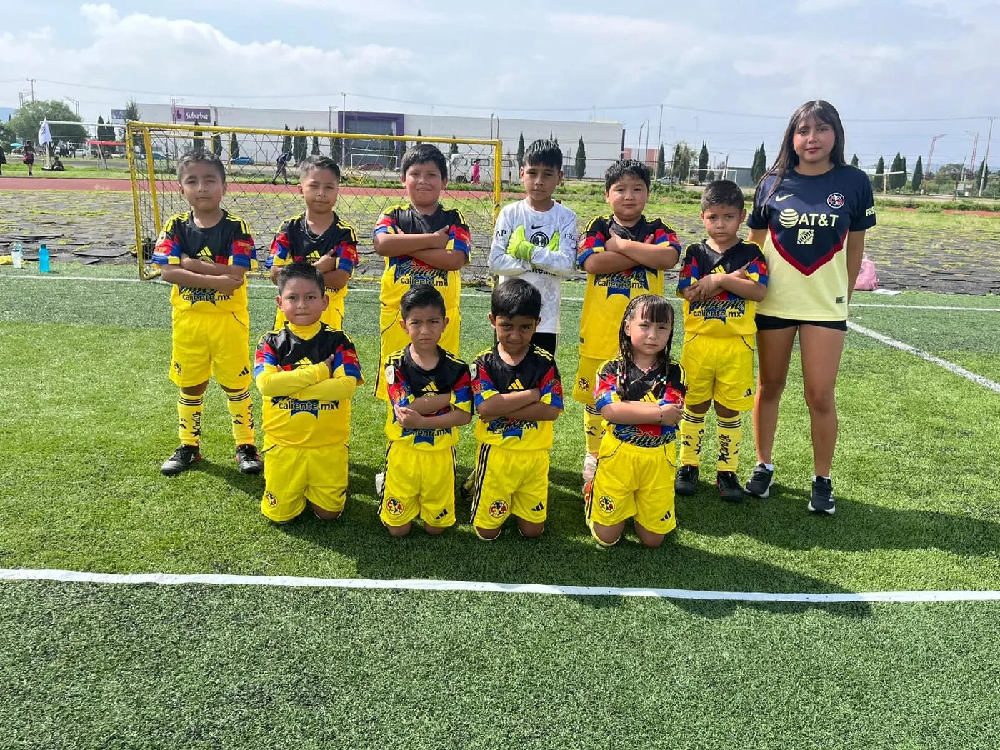
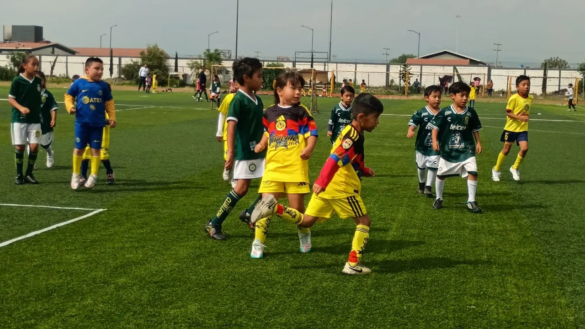
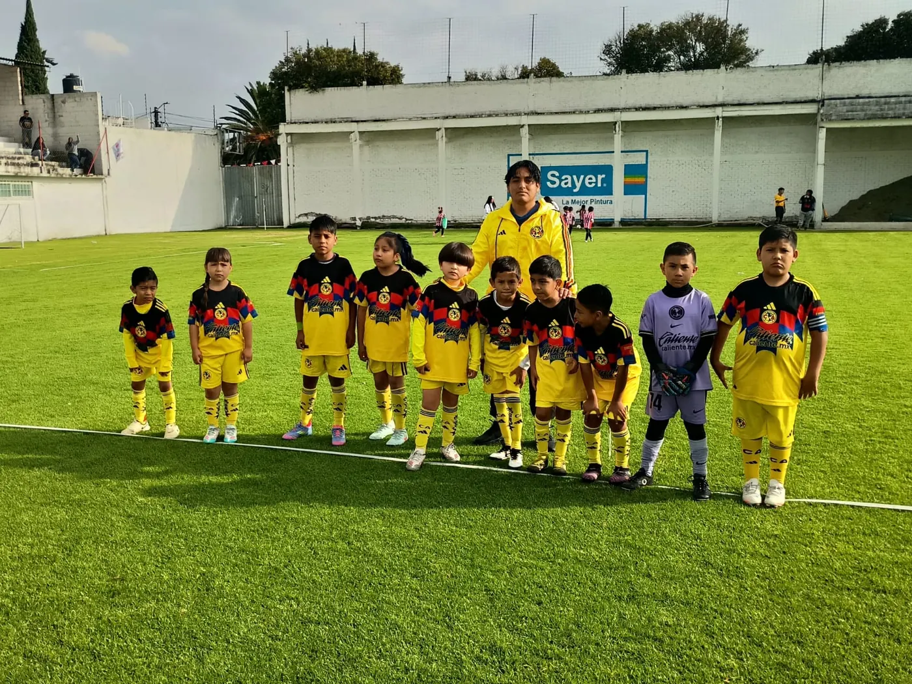
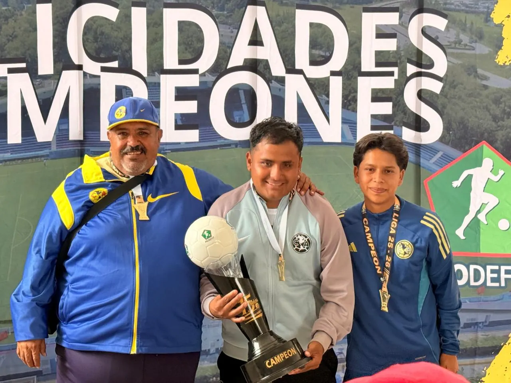
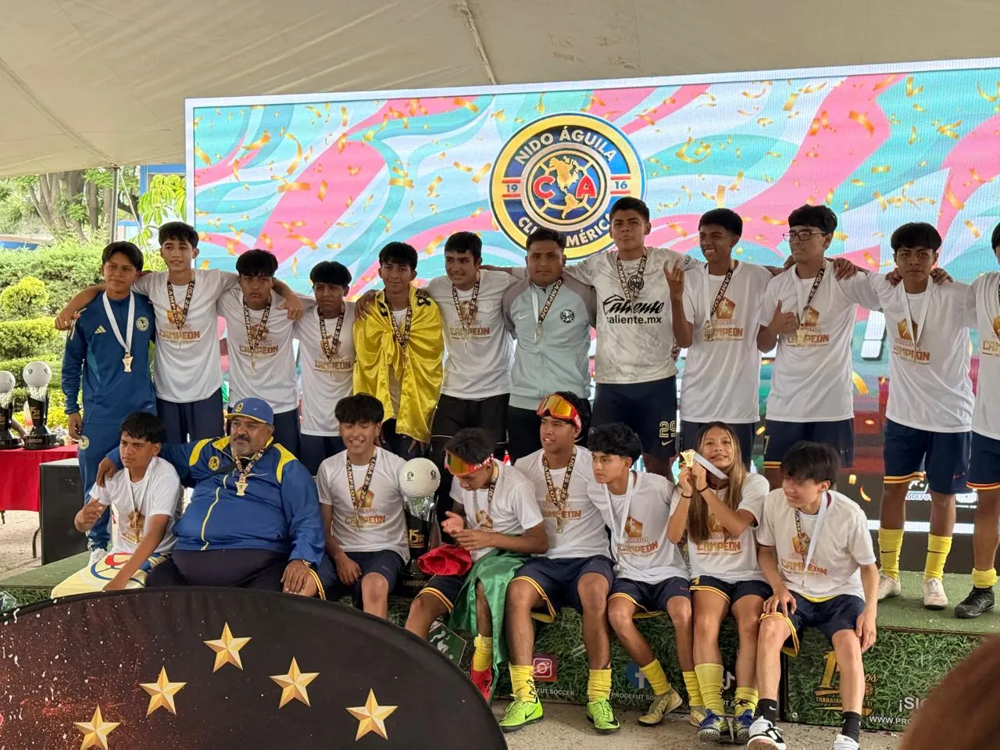
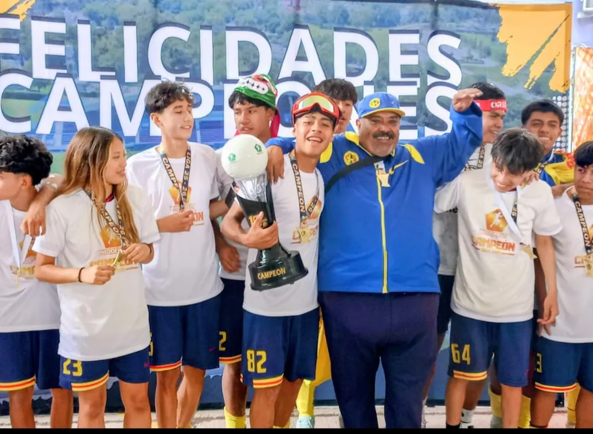

01
Formación futbolística
Técnica, posición y lectura de juego explicadas de forma sencilla y divertida, a la medida de su edad.
Nido Águila
Calentando motores0%
Inscripciones abiertas · 2009–2022
Formamos talento, disciplina, valores y pasión desde la primera patada.
Fútbol, valores y mística americanista para tu pequeño. Cupo abierto en categorías para nacidos de 2009 a 2022 —incluida Aguilitas (2018–2022)—, con turno de mañana y de tarde.
Sin compromiso · Respondemos por WhatsApp · Informes 56 1379 6501

01 Nueva categoría
¿Tu peque quiere aprender, divertirse y comenzar su camino en el fútbol? El Nido sigue creciendo y abrimos inscripciones para la categoría Aguilitas, para niñas y niños nacidos entre 2018 y 2022. Además, tenemos categorías para los nacidos de 2009 a 2017.
¿En qué año nació tu peque?
Pase del Nido
Elige el año de nacimiento y genera su pase.
Te decimos al instante si tu peque califica en la categoría.


02 Metodología Águila
En el Nido combinamos técnica, diversión y carácter para que cada peque descubra de qué está hecho, y se enamore del fútbol en el proceso.
Técnica, posición y lectura de juego explicadas de forma sencilla y divertida, a la medida de su edad.
Control, pase, coordinación, velocidad y remate: cada habilidad se trabaja con juegos y retos.
Dentro y fuera de la cancha: lo que se aprende en el Nido se queda para toda la vida.
Entrenan con el orgullo, la pasión y el carácter águila. Aquí se aprende a amar los colores.
Cuando un peque disfruta, aprende más y siempre quiere volver a la cancha.
03 Filosofía del Nido
En el Nido no solo se aprende a jugar. Se aprende a ganar con humildad, a levantarse con carácter y a volar con identidad águila.



05 Galería
Entrenamientos, partidos, festejos y mucha emoción. Toca cualquier foto para verla en grande.
06 Horarios
Dos turnos disponibles para que tu peque entrene sin que se rompa tu rutina.
Turno mañana
9:00a11:00AM
Turno tarde
4:00a6:00PM
07 Así de fácil
Mándanos un WhatsApp al 56 1379 6501 con el año de nacimiento de tu peque.
Mañana de 9 a 11 AM o tarde de 4 a 6 PM. El que mejor se acomode a tu familia.
Tu pequeño se une al Nido para aprender, divertirse y crecer con identidad americanista.
08 Preguntas frecuentes
¿No ves la tuya? Escríbenos y te respondemos por WhatsApp.
Clic aquí y pregúntanosEs la categoría de iniciación del Nido para niñas y niños nacidos en 2018, 2019, 2020, 2021 y 2022. Aprenden fútbol, desarrollan habilidades y crecen con disciplina y valores, con identidad americanista.
Tenemos categorías para niñas y niños nacidos en 2009, 2010, 2011, 2012, 2013, 2014, 2015, 2016 y 2017, además de Aguilitas para los nacidos de 2018 a 2022. Escríbenos con el año de nacimiento de tu peque y te orientamos.
Tenemos dos turnos: mañana de 9:00 a 11:00 AM y tarde de 4:00 a 6:00 PM. Elige el que mejor se acomode a tu familia.
¡Claro! Aguilitas está pensada para peques que quieren aprender, divertirse y comenzar su camino en el fútbol, aunque sea su primera vez en una cancha.
Muy fácil: escríbenos por WhatsApp al 56 1379 6501 con el año de nacimiento de tu peque y el turno que prefieres. También puedes llenar el formulario de esta página.
Estamos en Valle de Chalco, Estado de México. Escríbenos por WhatsApp y te compartimos la ubicación exacta de la cancha. También puedes seguirnos en Facebook.
Que los peques entrenan con el orgullo, la pasión y la mística águila: respeto, esfuerzo y carácter, dentro y fuera de la cancha.
09 Último paso
Llena el formulario y se abrirá WhatsApp con tu mensaje listo. Sin compromiso: solo nos dices cuándo nació tu peque y en qué turno le gustaría entrenar.